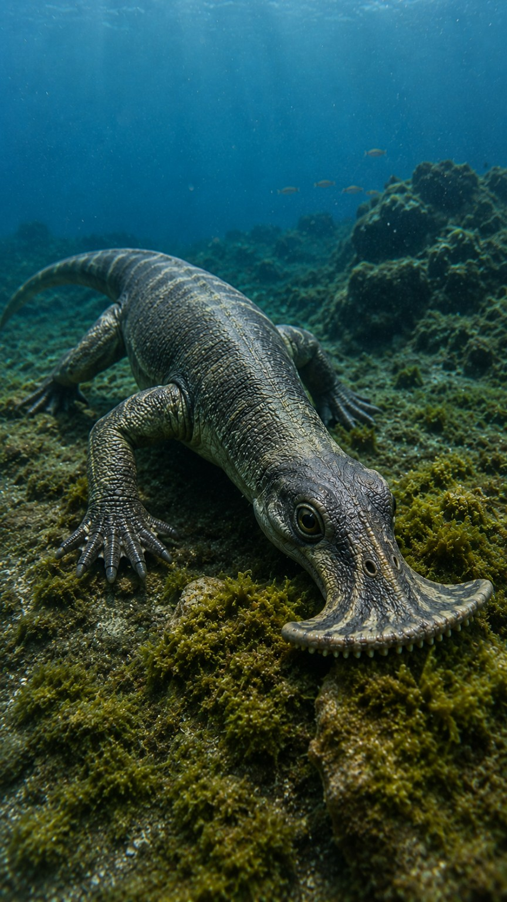
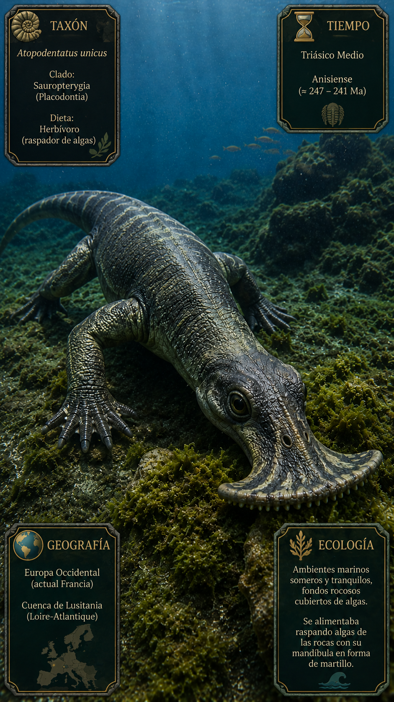
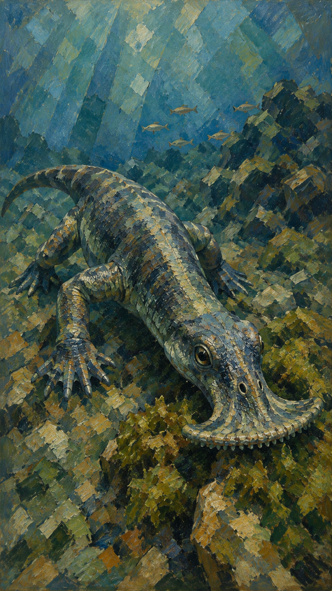

Paleoficha de PalEntropía



TAXÓN:
Atopodentatus unicus
CLADO:
Sauropterygiformes (Sauropterygia basal)
DIETA:
Herbívoro especializado (raspador y filtrador de algas y materia vegetal bentónica)
TAMAÑO:
Longitud aproximada de 2,7 a 3 metros.
LOCOMOCIÓN:
Marina especializada; extremidades modificadas en forma de aletas y cintura escapular robusta para el desplazamiento en aguas someras y sobre el fondo marino.
TIEMPO:
Triásico Medio (Anisiense, aprox. 247–242 Ma)
GEOGRAFÍA:
China (Provincia de Yunnan, Formación Guanling)
EQUIVALENCIA PALEOGEOGRÁFICA:
Plataformas marinas someras, lagunas costeras y mares epicontinentales tropicales.
AMBIENTE PALEAOECOLÓGICO:
Ecosistemas marinos costeros de baja energía, caracterizados por fondos blandos y abundante vegetación bentónica.
ECOLOGÍA:
• Flora: Praderas de algas marinas y tapetes microbianos bentónicos.
• Fauna secundaria: Comunidad de reptiles marinos basales, peces óseos y ammonoideos del Triásico Medio.
• Nichos: Consumidor primario especializado con una anatomía rostral única. La mandíbula anterior, expandida en forma de "martillo", poseía dientes en forma de cincel para raspar algas del sustrato, mientras que la región posterior funcionaba como un tamiz para filtrar el material vegetal desprendido.
• Relaciones: Sauropterygiforme basal. Constituye uno de los primeros reptiles marinos herbívoros conocidos y representa una adaptación única dentro de Sauropterygia. Su peculiar aparato mandibular demuestra una rápida diversificación ecológica de los reptiles marinos tras la extinción del Pérmico-Triásico.
CLIMA:
Wm21 (Triásico cálido y tropical). Condiciones marinas estables con alta productividad primaria en zonas litorales.
ESTADO ECOLÓGICO:
Estable. Componente trófico especializado de la franja nerítica somera, sin equivalentes ecológicos directos entre los reptiles marinos modernos.